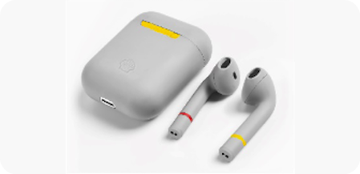
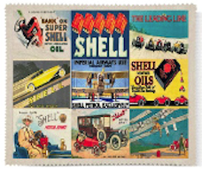
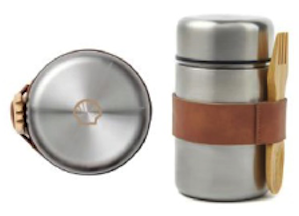

Copenhagen-based apparel leader supplying sustainable off-the-shelf and Brand-On-Demand products to B2B market.'Certified Responsibility' labeling and international sustainability standards across the supply chain
Explore our neutral product
High-quality and soft RPET fabric, easy to remove all dust and dirt. It can be used on any delicate surface, such as LCD TV screens, smart phones, camera lenses and filters. It can be stored in the laptop case.
Explore our heritage product
Ecoffee Cup - Sustainable, reusable cups made from natural fiber, corn starch, and resin. BA, BPS, and phthalate-free. Features a matte silicone lid and sleeve for hot liquids, sourced from sustainably managed bamboo in Zhejiang, China.
Explore our drinkware product